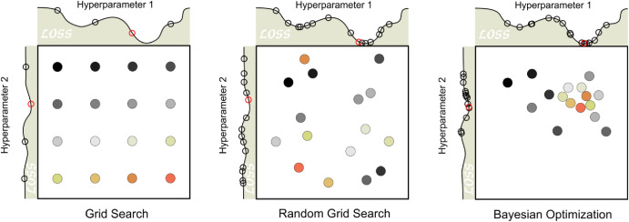
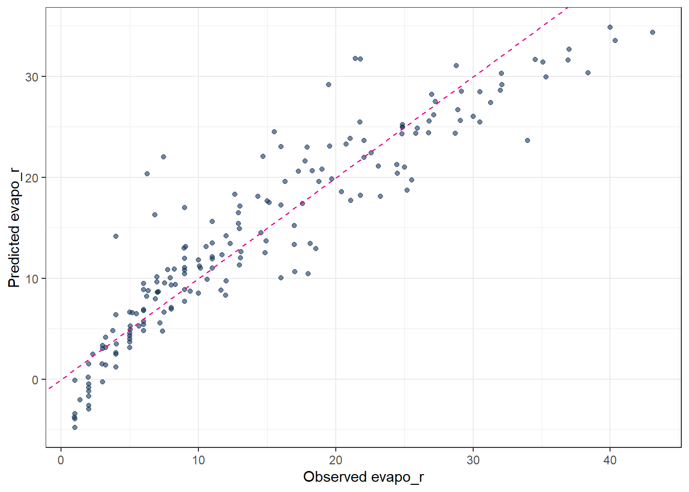
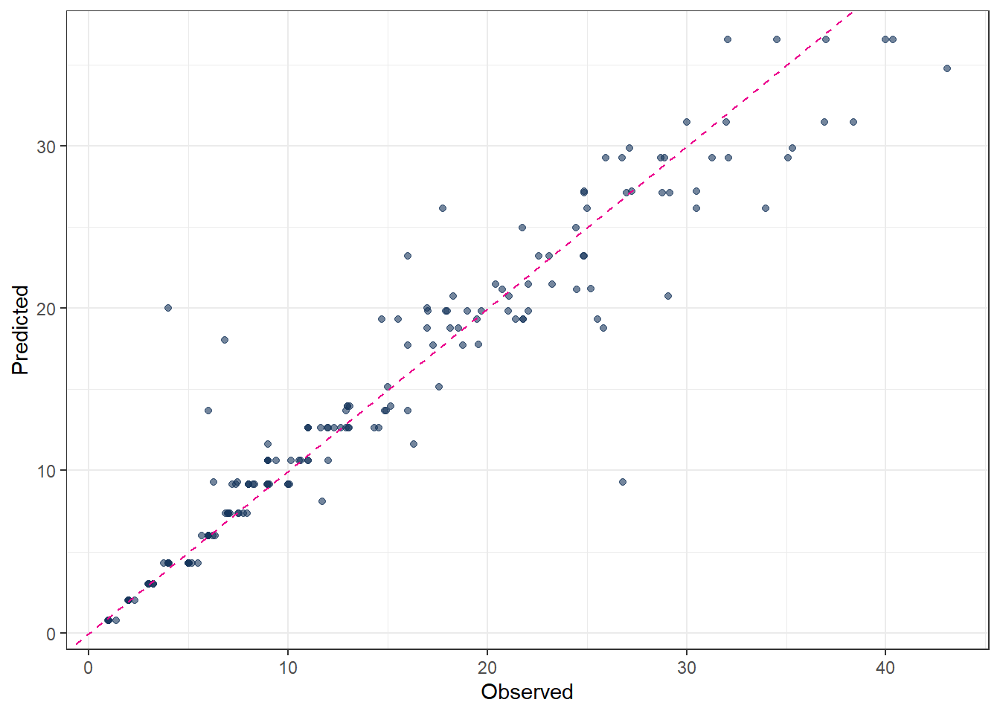
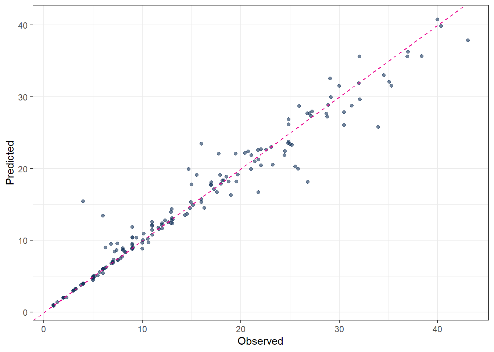
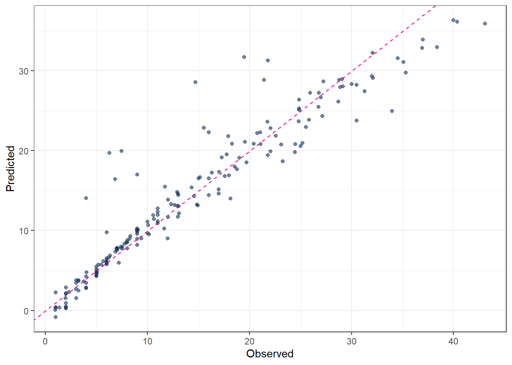
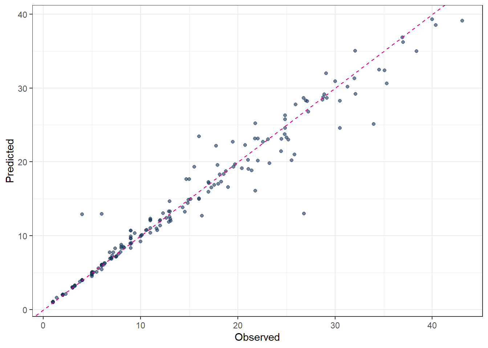

library(tidymodels)
library(tidyverse)
theme_set(theme_bw())Feature Engineering and Selection
1 Library and Data
color_RUB_blue <- "#17365c"
color_RUB_green <- "#8dae10"
color_TUD_pink <- "#EC008D"
color_DRESDEN <- c("#03305D", "#28618C", "#539DC5", "#84D1EE", "#009BA4", "#13A983", "#93C356", "#BCCF02")df_Bochum_KL <- read_csv("https://raw.githubusercontent.com/HydroSimul/Web/refs/heads/main/data_share/df_Bochum_KL.csv")1.1 Data description
The dataset is collected and reconstructed from DWD climate data (link to be added) and focuses on actual evapotranspiration. It contains 11 variables:
- RSK : daily precipitation sum [mm]
- RSKF : precipitation indicator (e.g. 1: rain / 4: snow) [-]
- VPM : mean vapor pressure [hPa]
- TMK : mean air temperature [°C]
- UPM : mean relative humidity [%]
- TXK : daily maximum air temperature [°C]
- TNK : daily minimum air temperature [°C]
- TGK : daily ground-level minimum temperature [°C]
- evapo_p : potential evapotranspiration [mm], calculated using a standard empirical method
- evapo_r : actual evapotranspiration [mm]
- soil_moist : soil moisture content [mm]
The dataset comprises 731 observations (two years) in Sation Bochum. While most meteorological variables are directly measured at station, potential evapotranspiration, actual evapotranspiration, and soil moisture are extracted from raster-based products.
This study is formulated as a supervised learning regression task. Actual evapotranspiration (evapo_r) is used as the target variable, while the remaining 10 variables serve as feature variables. A feature space of size 10 is considered moderate; therefore, no dimensionality reduction techniques such as PCA or UMAP are applied.
Basic exploratory data analysis and data tidying have already been completed during the data preparation phase. Consequently, the feature engineering stage is limited to basic transformations and feature standardization.
All regression models presented in the following sections use the same feature engineering rcp_Norm.
# Train–test split (75% / 25%)
split_Bochum <- initial_split(df_Bochum_KL, prop = 3/4)
df_Train <- training(split_Bochum)
df_Test <- testing(split_Bochum)
# Preprocessing recipe (normalize + PCA)
rcp_Norm <-
recipe(evapo_r ~ ., data = df_Train) |>
# step_mutate(RSKF = as.factor(RSKF)) |>
# step_dummy(RSKF) |>
step_YeoJohnson(all_numeric_predictors()) |>
step_normalize(all_numeric_predictors())2 Tuning Parameters
As discussed in the previous article, the basic workflow for model fitting using the tidymodels framework consists of the following steps:
- Split the data into training and test sets.
- Perform feature engineering using a recipe.
- Specify the model.
- Define the workflow by combining the recipe and the model specification.
- Fit the model to the training data.
- Generate predictions.
- Validate the model.
In standard model fitting, the hyperparameters of the modeling method remain fixed. However, these parameters can also be modified and optimized. This optimization process is referred to as tuning rather than fitting. When tuning is included, several steps in the workflow change:
- Split the data into resampled sets, typically using cross-folds.
- Perform feature engineering using a recipe.
- Specify the model, leaving the hyperparameters unset by using the
tune()function so that they can be optimized.
- Define a workflow designed for tuning.
- Define the parameter ranges to be explored.
- Specify the tuning search strategy, such as grid search or iterative search.
- Conduct the tuning procedure.
- Identify the best-performing parameter values.
- Use the tuned parameters to construct the final model.
- Fit the final model to the training data.
- Generate predictions.
- Validate the final model.
The aim of tuning is to identify the optimal set of hyperparameters for a given model. In general, two main search strategies are used to evaluate hyperparameter combinations: grid search and iterative (sequential) search.

2.1 Grid search
Grid search involves predefining a set of hyperparameter values and evaluating all possible combinations. The key design choices are how the grid is constructed and how many combinations are included. Grid search is often criticized for being computationally inefficient, especially in high-dimensional hyperparameter spaces. However, this inefficiency mainly arises when the grid is poorly designed. With a well-chosen grid, grid search can be effective and straightforward. Strategies for efficient grid construction are discussed in Chapter 13.
Typical variants include: - grid_regular(levels = 3): a structured grid with evenly spaced values for each hyperparameter
- grid_random(size = 30): 30 randomly sampled combinations, which are not evenly spaced but often provide broader coverage of the parameter space
2.2 Iterative (sequential) search
Iterative or sequential search methods identify promising hyperparameter combinations step by step, guided by the results of previous evaluations. These methods adaptively explore the parameter space and can be much more efficient than grid search for complex or high-dimensional problems. Many nonlinear optimization algorithms fall into this category, although their performance can vary. In some cases, an initial set of hyperparameter combinations must be evaluated to initialize the search. Iterative tuning strategies are discussed in more detail in Chapter 14.
2.3 Manual search
When prior experience or guidance from the literature is available, manual search can also be effective. In this approach, expert knowledge is used to reduce the number of hyperparameters to tune or to restrict their plausible ranges. Although manual search is less systematic, it can substantially decrease computational cost and is often useful as a preliminary step before applying automated tuning methods.
3 Linear regression
Linear regression is a classical supervised learning method used to estimate the linear relationship between one or more predictors and a continuous outcome variable.
In practice, most applications involve several predictors, so the standard approach is the multiple linear regression model, where the response is modeled as a linear combination of all predictors.
For predictors \(x_1, x_2, ..., x_p\), the model is:
\[ y = \beta_0 + \beta_1 x_1 + \beta_2 x_2 + \cdots + \beta_p x_p + \varepsilon \]
where
- \(y\) is the outcome,
- \(\beta_0\) is the intercept,
- \(\beta_j\) are the coefficients showing the contribution of each predictor,
- \(\varepsilon\) is the random error.
The goal is to estimate the coefficients \(\beta\) so that the model predicts \(y\) as well as possible.
# define linear regression model using base R lm engine
mdl_Mlm <-
linear_reg() |>
set_engine("lm")
# build workflow: preprocessing recipe + model
wflow_Norm_Mlm <-
workflow() |>
add_recipe(rcp_Norm) |>
add_model(mdl_Mlm)
# fit the workflow on training data
fit_Norm_Mlm <-
wflow_Norm_Mlm |>
fit(data = df_Train)
# generate predictions on test data
pred_Mlm <-
predict(fit_Norm_Mlm, df_Test) |>
bind_cols(df_Test |> dplyr::select(evapo_r))
# evaluate model performance (e.g. RMSE, MAE, R²)
metrics(pred_Mlm, truth = evapo_r, estimate = .pred)# A tibble: 3 × 3
.metric .estimator .estimate
<chr> <chr> <dbl>
1 rmse standard 3.91
2 rsq standard 0.851
3 mae standard 2.90 # observed vs. predicted scatter plot
ggplot(pred_Mlm, aes(x = evapo_r, y = .pred)) +
geom_point(alpha = 0.6, color = color_RUB_blue) +
geom_abline(
intercept = 0, slope = 1,
linetype = "dashed", color = color_TUD_pink
) +
labs(
x = "Observed evapo_r",
y = "Predicted evapo_r"
)
4 Regularization
For ordinary linear regression (using the lm engine), there are no hyperparameters to tune. However, once regularization is introduced (ridge, lasso, or elastic net), an additional penalty term is added to the loss function in order to prevent overfitting.
In regression, instead of minimizing only the training error (e.g. the sum of squared residuals), the objective function becomes
training error + penalty on model parameters
This penalty constrains the size or structure of the regression coefficients and serves three main purposes: - reduce overfitting by preventing the model from fitting noise in the training data
- improve generalization performance on unseen data
- mitigate multicollinearity by stabilizing coefficient estimates
More specifically: - Ridge regression applies an L2 penalty (the sum of squared coefficients). It shrinks coefficients toward zero but typically does not set them exactly to zero. - Lasso regression applies an L1 penalty (the sum of absolute coefficients). This can force some coefficients to become exactly zero, effectively performing variable selection. - Elastic net combines L1 and L2 penalties, providing a balance between sparsity (lasso) and stability (ridge).
In summary, regularization controls model complexity by penalizing large or unstable parameter values during model fitting.
4.1 Regularization hyperparameters
Regularized regression models must control how strong the penalty is and which type of penalty is applied. These controls are implemented as hyperparameters, most commonly:
penalty(λ): controls the overall strength of regularization
mixture(α): controls the type of regularization- α = 0 corresponds to ridge regression
- α = 1 corresponds to lasso regression
- 0 < α < 1 corresponds to elastic net
- α = 0 corresponds to ridge regression
Different regression methods therefore differ in their loss functions and regularization strategies. The key distinction from ordinary linear regression is the presence of these hyperparameters (penalty and mixture), which determine the amount and form of regularization applied to the model.
4.2 Ordinary Least Squares (OLS)
- No regularization → no hyperparameters.
- The solution is obtained analytically by minimizing the sum of squared residuals.
\[ \min_{\beta} \sum_{i=1}^n (y_i - \hat{y}_i)^2 \]
Because there is no penalty term, the model can overfit when predictors are highly correlated.
4.3 Ridge Regression (L2 penalty)
- Introduces one hyperparameter:
penalty(lambda): strength of coefficient shrinkage
mixtureis fixed to 0, meaning pure L2 regularization.
\[ \min_{\beta} \left( \sum_{i=1}^n (y_i - \hat{y}_i)^2 + \lambda \sum_{j=1}^p \beta_j^2 \right) \]
Large lambda → strong shrinkage.
Coefficients approach zero but never become exactly zero.
4.4 Lasso Regression (L1 penalty)
- Also uses one hyperparameter:
penalty(lambda): controls how strongly coefficients are pushed toward zero
mixtureis fixed to 1, meaning pure L1 regularization.
\[ \min_{\beta} \left( \sum_{i=1}^n (y_i - \hat{y}_i)^2 + \lambda \sum_{j=1}^p |\beta_j| \right) \]
Large lambda → many coefficients become exactly zero → feature selection.
4.5 Elastic Net Regression (combined L1 + L2)
- Uses two hyperparameters:
penalty(lambda): global strength of shrinkage
mixture(alpha): balance between L1 and L2- alpha = 0 → ridge
- alpha = 1 → lasso
- 0 < alpha < 1 → mixture
- alpha = 0 → ridge
\[ \min_{\beta} \left( \sum_{i=1}^n (y_i - \hat{y}_i)^2 + \lambda \left[ \alpha \sum_{j=1}^p |\beta_j| + (1-\alpha) \sum_{j=1}^p \beta_j^2 \right] \right) \]
Elastic Net is useful when predictors are correlated and when both shrinkage and feature selection are desired.
4.6 Tuning Parameters of regularization
Summary of Hyperparameter Settings:
| Method | penalty (lambda) | mixture (alpha) | Regularization |
|---|---|---|---|
| OLS | not used | not used | none |
| Ridge | yes | 0 | L2 |
| Lasso | yes | 1 | L1 |
| Elastic Net | yes | 0 < α < 1 | L1 + L2 |
In practice, penalty and mixture are usually selected using cross-validation, since the optimal values depend on the dataset.
- Split the data into resampled sets define the parameter “Number of partitions”
vwhich means how many subsets (folds) the dataset is split into for cross-validation.
In v-fold cross-validation:
- The data are divided into v roughly equal-sized parts (folds).
- The model is trained v times.
- Each time, 1 fold is held out as validation data, and the remaining v−1 folds are used for training.
- The performance is averaged over the v runs.
## folds ---------
set.seed(111)
cv_folds_Norm <- vfold_cv(df_Train, v = 10)Feature engineering using a recipe
The feature engineering step is performed using a preprocessing recipe, which has already been defined in the previous section.Model specification with tunable hyperparameters
Next, the regression model is specified while leaving the hyperparameters unset by using thetune()function. This allows the hyperparameters to be optimized during the tuning process rather than fixed in advance. The model structure (e.g. linear regression with regularization) is defined at this stage, while the optimal values of the hyperparameters are determined later through the chosen tuning strategy.
## Model with tunable hyperparameters ------------------------------
mdl_tune_EN <-
linear_reg(
penalty = tune(), # lambda
mixture = tune() # alpha
) |>
set_engine("glmnet")- Define a workflow designed for tuning.
## Workflow -------------------------
wflow_tune_EN <-
workflow() |>
add_recipe(rcp_Norm) |>
add_model(mdl_tune_EN)- Define the parameter ranges to be explored
The ranges of the hyperparameters to be tuned must be specified before the tuning process. In most cases, reasonable default ranges are already stored within the model specification. These predefined ranges can be directly extracted using the extract_parameter_set_dials() function. This approach ensures that the tuning process starts from sensible and model-appropriate parameter bounds, while still allowing the ranges to be adjusted if prior knowledge or problem-specific considerations are available.
param_tune_EN <-
extract_parameter_set_dials(wflow_tune_EN)
param_tune_EN_final <-
param_tune_EN |>
finalize(df_Train)- Specify the tuning search strategy
The tuning search strategy determines how hyperparameter combinations are generated and evaluated. Common approaches include grid search and iterative (sequential) search.
For grid search, grid_regular() is often used. This function divides the predefined parameter ranges into a specified number of evenly spaced values using the levels argument. The full grid is then formed by evaluating all possible combinations of these values across the hyperparameters. A larger number of levels increases the resolution of the search but also raises the computational cost.
## Hyperparameter grid -------------
grid_EN <-
grid_regular(
param_tune_EN_final,
levels = 6
)- Conduct the tuning procedure.
set.seed(123)
tune_EN <-
tune_grid(
wflow_tune_EN,
resamples = cv_folds_Norm,
grid = grid_EN,
metrics = metric_set(rmse, mae, rsq),
control = control_grid(save_pred = TRUE)
)- Identify the best-performing parameter values.
## Show best hyperparameters -------
show_best(tune_EN, metric = "rmse")# A tibble: 5 × 8
penalty mixture .metric .estimator mean n std_err .config
<dbl> <dbl> <chr> <chr> <dbl> <int> <dbl> <chr>
1 0.0000000001 1 rmse standard 3.92 10 0.260 Preprocessor1_Mod…
2 0.00000001 1 rmse standard 3.92 10 0.260 Preprocessor1_Mod…
3 0.000001 1 rmse standard 3.92 10 0.260 Preprocessor1_Mod…
4 0.0001 1 rmse standard 3.92 10 0.260 Preprocessor1_Mod…
5 0.01 0.24 rmse standard 3.92 10 0.263 Preprocessor1_Mod…- Use the tuned parameters to construct the final model.
## Finalize model with best hyperparameters -------------------------
best_params_EN <- select_best(tune_EN, metric = "rmse")
wflow_final_EN <- finalize_workflow(wflow_tune_EN, best_params_EN)- Fit the final model to the training data.
fit_final_EN <- fit(wflow_final_EN, df_Train)- Generate predictions.
pred_final_EN <-
predict(fit_final_EN, df_Test) |>
bind_cols(df_Test |> dplyr::select(evapo_r))- Validate the final model.
metrics(pred_final_EN, truth = evapo_r, estimate = .pred)# A tibble: 3 × 3
.metric .estimator .estimate
<chr> <chr> <dbl>
1 rmse standard 3.90
2 rsq standard 0.852
3 mae standard 2.89 5 Decision Trees
Tree-based models are a class of nonparametric algorithms that work by partitioning the feature space into a number of smaller (non-overlapping) regions with similar response values using a set of splitting rules. Predictions are obtained by fitting a simpler model (e.g., a constant like the average response value) in each region. Such divide-and-conquer methods can produce simple rules that are easy to interpret and visualize with tree diagrams. [@MLR_Boehmke_2019]
# 1. Cross-validation folds (you already created cv_folds_Norm)
# 2. Define tunable Decision Tree model
mdl_tune_DT <-
decision_tree(
cost_complexity = tune(), # pruning parameter (CCP)
tree_depth = tune(), # maximum depth
min_n = tune() # minimum number of data points in a node
) |>
set_engine("rpart") |>
set_mode("regression")
# 3. Workflow (recipe + model)
wflow_tune_DT <-
workflow() |>
add_recipe(rcp_Norm) |>
add_model(mdl_tune_DT)
# 4. Hyperparameter grid
set.seed(123)
grid_DT <- grid_random(
cost_complexity(range = c(-5, -0.5)), # .00001 to .3 (log scale)
tree_depth(range = c(2, 30)),
min_n(range = c(2, 40)),
size = 30 # number of random grid combinations
)
# 5. Cross-validated tuning
set.seed(123)
tune_DT <-
tune_grid(
wflow_tune_DT,
resamples = cv_folds_Norm,
grid = grid_DT,
metrics = metric_set(rmse, rsq, mae),
control = control_grid(save_pred = TRUE)
)
# 6. Best hyperparameters
show_best(tune_DT, metric = "rmse")# A tibble: 5 × 9
cost_complexity tree_depth min_n .metric .estimator mean n std_err
<dbl> <int> <int> <chr> <chr> <dbl> <int> <dbl>
1 0.000197 10 14 rmse standard 3.14 10 0.286
2 0.0000291 10 23 rmse standard 3.28 10 0.243
3 0.000200 9 24 rmse standard 3.30 10 0.237
4 0.000299 29 18 rmse standard 3.33 10 0.290
5 0.0000155 28 32 rmse standard 3.37 10 0.208
# ℹ 1 more variable: .config <chr>best_prams_DT <- select_best(tune_DT, metric = "rmse")
# 7. Final model with tuned hyperparameters
wflow_final_DT <-
finalize_workflow(wflow_tune_DT, best_prams_DT)
fit_final_DT <- fit(wflow_final_DT, df_Train)
# Predict
pred_final_DT <-
predict(fit_final_DT, df_Test) |>
bind_cols(df_Test |> dplyr::select(evapo_r))
# Metrics
metrics(pred_final_DT, truth = evapo_r, estimate = .pred)# A tibble: 3 × 3
.metric .estimator .estimate
<chr> <chr> <dbl>
1 rmse standard 3.06
2 rsq standard 0.908
3 mae standard 1.73 # Plot predicted vs observed
ggplot(pred_final_DT, aes(x = evapo_r, y = .pred)) +
geom_point(alpha = 0.6, color = color_RUB_blue) +
geom_abline(
intercept = 0,
slope = 1,
linetype = "dashed",
color = color_TUD_pink
) +
labs(
x = "Observed",
y = "Predicted"
)
6 Rndom forest
# tunable Random Forest model -----------
# 1. Cross-validation folds (already created)
set.seed(123)
cv_folds_Norm <- vfold_cv(df_Train, v = 10)
# 2. Define tunable Random Forest model
mdl_tune_RF <-
rand_forest(
trees = tune(), # number of trees
mtry = tune(), # number of predictors sampled at each split
min_n = tune() # minimum node size
) |>
set_engine("ranger") |>
set_mode("regression")
# 3. Workflow (recipe + model)
wflow_tune_RF <-
workflow() |>
add_recipe(rcp_Norm) |>
add_model(mdl_tune_RF)
# 4. Hyperparameter grid (extracted from workflow)
param_tune_RF <- extract_parameter_set_dials(wflow_tune_RF)
# Update mtry with the actual number of predictors
param_tune_RF <- param_tune_RF |>
update(mtry = mtry(range = c(1, ncol(df_Train) - 1)))
# 5. Create grid
set.seed(123)
grid_RF <- grid_regular(
param_tune_RF,
levels = 3
)
# 6. Cross-validated tuning
set.seed(123)
tune_RF <-
tune_grid(
wflow_tune_RF,
resamples = cv_folds_Norm,
grid = grid_RF,
metrics = metric_set(rmse, rsq, mae),
control = control_grid(save_pred = TRUE)
)
# 7. Best hyperparameters
show_best(tune_RF, metric = "rmse")# A tibble: 5 × 9
mtry trees min_n .metric .estimator mean n std_err .config
<int> <int> <int> <chr> <chr> <dbl> <int> <dbl> <chr>
1 10 2000 2 rmse standard 2.20 10 0.163 Preprocessor1_Model09
2 10 1000 2 rmse standard 2.21 10 0.160 Preprocessor1_Model06
3 5 2000 2 rmse standard 2.45 10 0.178 Preprocessor1_Model08
4 5 1000 2 rmse standard 2.46 10 0.171 Preprocessor1_Model05
5 10 2000 21 rmse standard 2.49 10 0.185 Preprocessor1_Model18best_prams_RF <- select_best(tune_RF, metric = "rmse")
# 8. Final model with tuned hyperparameters
wflow_final_RF <-
finalize_workflow(wflow_tune_RF, best_prams_RF)
fit_final_RF <- fit(wflow_final_RF, df_Train)
# Predict
pred_final_RF <-
predict(fit_final_RF, df_Test) |>
bind_cols(df_Test |> dplyr::select(evapo_r))
# Metrics
metrics(pred_final_RF, truth = evapo_r, estimate = .pred)# A tibble: 3 × 3
.metric .estimator .estimate
<chr> <chr> <dbl>
1 rmse standard 2.10
2 rsq standard 0.957
3 mae standard 1.14 # Plot predicted vs observed
ggplot(pred_final_RF, aes(x = evapo_r, y = .pred)) +
geom_point(alpha = 0.6, color = color_RUB_blue) +
geom_abline(
intercept = 0,
slope = 1,
linetype = "dashed",
color = color_TUD_pink
) +
labs(
x = "Observed",
y = "Predicted"
)
7 SVM
# Tunable SVM model (RBF kernel) --------------------------------
# 1. Cross-validation folds (already created)
set.seed(123)
cv_folds_Norm <- vfold_cv(df_Train, v = 10)
# 2. Define tunable SVM model
mdl_tune_SVM <-
svm_rbf(
cost = tune(), # C penalty
rbf_sigma = tune() # kernel width
) |>
set_engine("kernlab") |>
set_mode("regression")
# 3. Workflow (recipe + model)
wflow_tune_SVM <-
workflow() |>
add_recipe(rcp_Norm) |>
add_model(mdl_tune_SVM)
# 4. Hyperparameter grid
param_tune_SVM <- extract_parameter_set_dials(wflow_tune_SVM)
set.seed(123)
grid_SVM <- grid_random(
param_tune_SVM,
size = 50
)
# 5. Cross-validated tuning
set.seed(123)
tune_SVM <-
tune_grid(
wflow_tune_SVM,
resamples = cv_folds_Norm,
grid = grid_SVM,
metrics = metric_set(rmse, rsq, mae),
control = control_grid(save_pred = TRUE)
)
# 6. Best hyperparameters
show_best(tune_SVM, metric = "rmse")# A tibble: 5 × 8
cost rbf_sigma .metric .estimator mean n std_err .config
<dbl> <dbl> <chr> <chr> <dbl> <int> <dbl> <chr>
1 3.82 0.00762 rmse standard 3.23 10 0.161 Preprocessor1_Model34
2 0.302 0.0892 rmse standard 3.29 10 0.219 Preprocessor1_Model09
3 10.1 0.00351 rmse standard 3.39 10 0.153 Preprocessor1_Model21
4 10.5 0.00341 rmse standard 3.40 10 0.153 Preprocessor1_Model08
5 2.60 0.707 rmse standard 3.50 10 0.164 Preprocessor1_Model37best_prams_SVM <- select_best(tune_SVM, metric = "rmse")
# 7. Final SVM model with tuned hyperparameters
wflow_final_SVM <-
finalize_workflow(wflow_tune_SVM, best_prams_SVM)
fit_final_SVM <- fit(wflow_final_SVM, df_Train)
# 8. Predict
pred_final_SVM <-
predict(fit_final_SVM, df_Test) |>
bind_cols(df_Test |> dplyr::select(evapo_r))
# 9. Metrics
metrics(pred_final_SVM, truth = evapo_r, estimate = .pred)# A tibble: 3 × 3
.metric .estimator .estimate
<chr> <chr> <dbl>
1 rmse standard 3.20
2 rsq standard 0.899
3 mae standard 1.92 # 10. Plot predicted vs observed
ggplot(pred_final_SVM, aes(x = evapo_r, y = .pred)) +
geom_point(alpha = 0.6, color = color_RUB_blue) +
geom_abline(
intercept = 0,
slope = 1,
linetype = "dashed",
color = color_TUD_pink
) +
labs(
x = "Observed",
y = "Predicted"
)
8 GBOST
# Tunable Gradient Boosting model (XGBoost) ---------------------
# 1. Model specification with tunable hyperparameters
mdl_tune_GB <-
boost_tree(
trees = tune(), # number of trees
learn_rate = tune(), # learning rate
mtry = tune(), # number of predictors per split
tree_depth = tune(), # maximum depth
min_n = tune(), # minimum node size
loss_reduction = tune() # gamma
) |>
set_engine("xgboost") |>
set_mode("regression")
# 2. Workflow (recipe + model)
wflow_tune_GB <-
workflow() |>
add_recipe(rcp_Norm) |>
add_model(mdl_tune_GB)
# 3. Parameter set (finalized with training data)
param_tune_GB <-
extract_parameter_set_dials(wflow_tune_GB) |>
finalize(df_Train)
# 4. Bayesian tuning
set.seed(123)
tune_GB <-
tune_bayes(
wflow_tune_GB,
resamples = cv_folds_Norm,
param_info = param_tune_GB,
initial = 10, # initial random points
iter = 30, # Bayesian iterations
metrics = metric_set(rmse, rsq, mae),
control = control_bayes(
verbose = TRUE,
save_pred = TRUE
)
)
# 5. Best hyperparameters
show_best(tune_GB, metric = "rmse")# A tibble: 5 × 13
mtry trees min_n tree_depth learn_rate loss_reduction .metric .estimator
<int> <int> <int> <int> <dbl> <dbl> <chr> <chr>
1 9 863 4 13 0.0312 0.576 rmse standard
2 11 1818 5 7 0.0968 0.000212 rmse standard
3 8 1535 11 6 0.0269 0.816 rmse standard
4 11 1463 13 12 0.0268 0.200 rmse standard
5 10 436 2 14 0.0522 0.000000117 rmse standard
# ℹ 5 more variables: mean <dbl>, n <int>, std_err <dbl>, .config <chr>,
# .iter <int>best_prams_GB <- select_best(tune_GB, metric = "rmse")
# 6. Final GB model with tuned hyperparameters
wflow_final_GB <-
finalize_workflow(wflow_tune_GB, best_prams_GB)
fit_final_GB <- fit(wflow_final_GB, df_Train)
# 7. Predict
pred_final_GB <-
predict(fit_final_GB, df_Test) |>
bind_cols(df_Test |> dplyr::select(evapo_r))
# 8. Metrics
metrics(pred_final_GB, truth = evapo_r, estimate = .pred)# A tibble: 3 × 3
.metric .estimator .estimate
<chr> <chr> <dbl>
1 rmse standard 2.18
2 rsq standard 0.955
3 mae standard 1.14 # 9. Plot predicted vs observed
ggplot(pred_final_GB, aes(x = evapo_r, y = .pred)) +
geom_point(alpha = 0.6, color = color_RUB_blue) +
geom_abline(
intercept = 0,
slope = 1,
linetype = "dashed",
color = color_TUD_pink
) +
labs(
x = "Observed",
y = "Predicted"
)